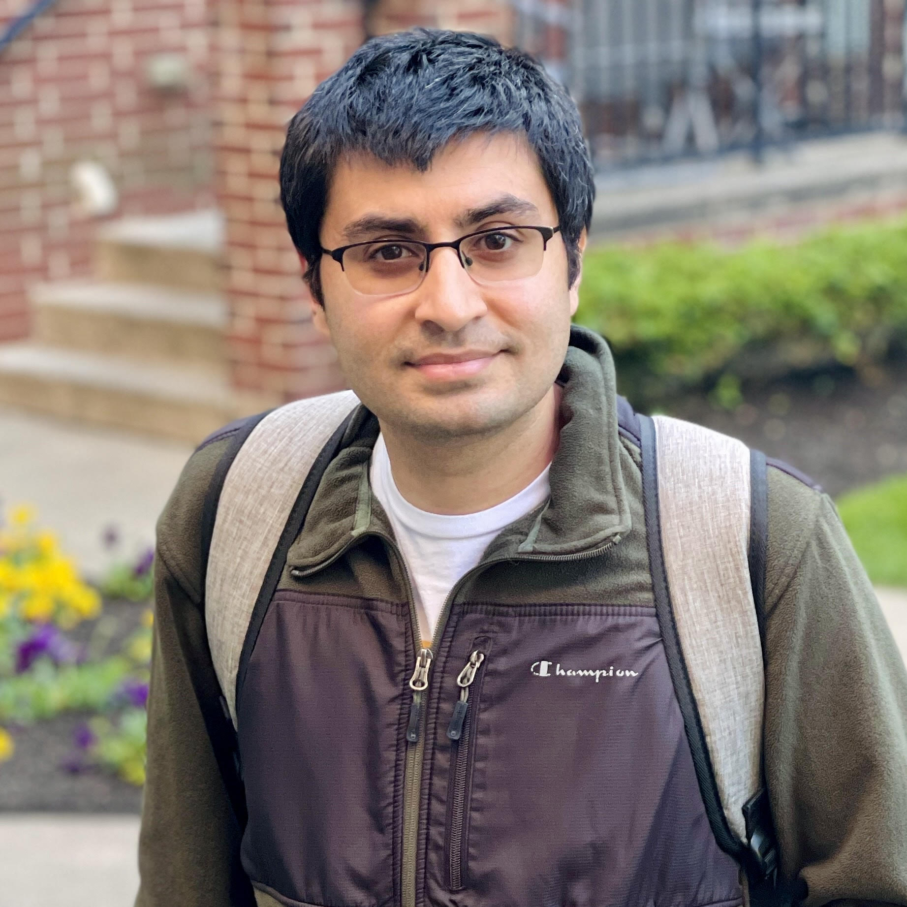
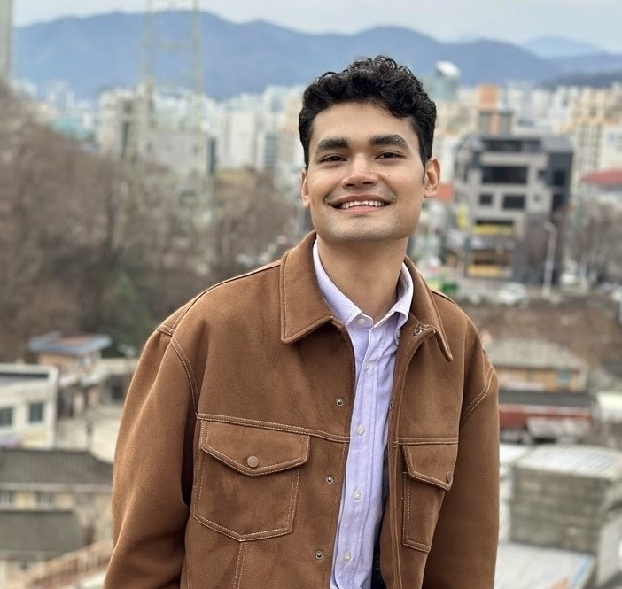
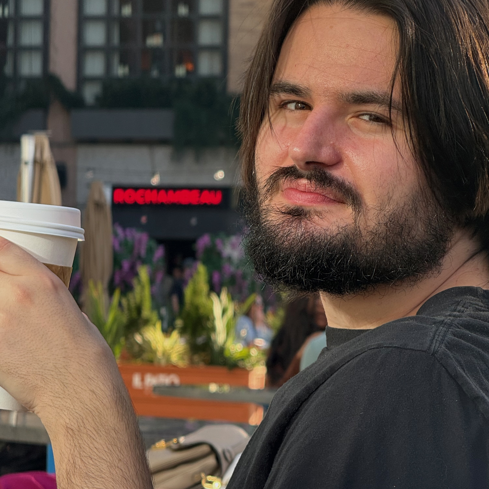
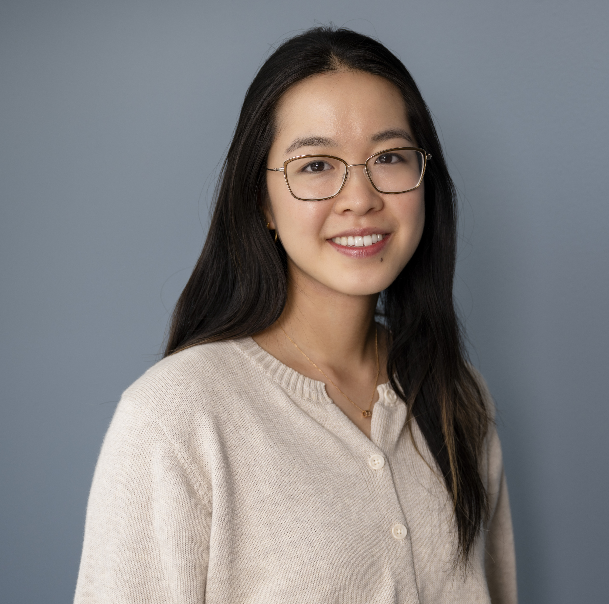
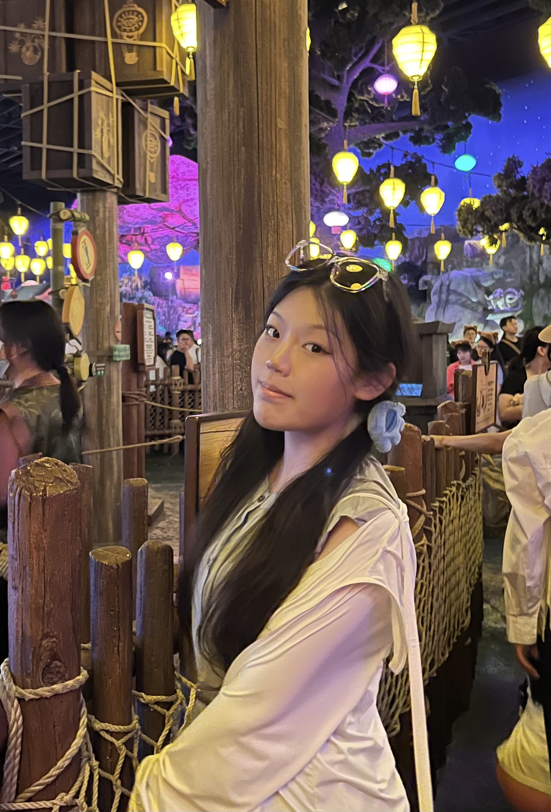
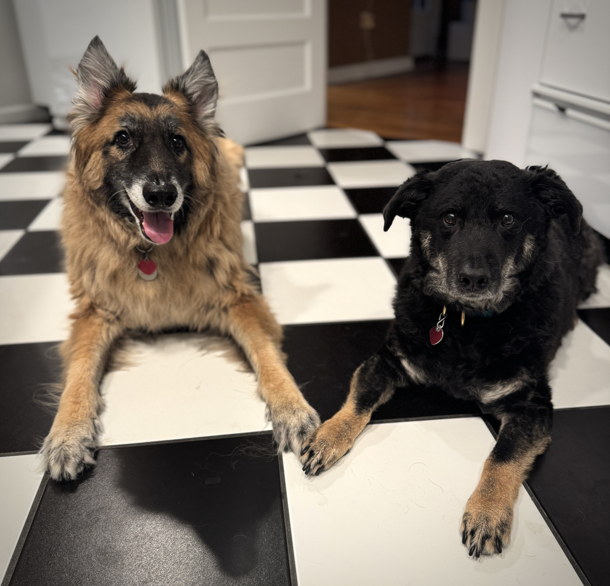

Carnegie Mellon University
Assistant Professor
Neuroscience Institute
Biomedical Engineering (courtesy)
University of Pittsburgh
Adjunct Assistant Professor
Department of Neuroscience
Saurabh Vyas completed undergraduate training in Biomedical Engineering and Electrical Engineering at Johns Hopkins University in 2012. While working on his MSE in Biomedical Engineering, Saurabh was a research engineer at the Applied Physics Laboratory. Saurabh completed his PhD in Bioengineering at Stanford University in 2020, where he was advised by Prof. Krishna Shenoy. His research was recognized with a NSF Graduate Research Fellowship, and a NIH NINDS NRSA (F31) fellowship. In 2021, Saurabh's thesis was awarded the Donald B. Lindsley Prize by the Society for Neuroscience, which "recognizes a young neuroscientist's outstanding PhD thesis in the general area of behavioral (i.e., systems) neuroscience." Saurabh completed a postdoctoral fellowship at Columbia University in 2025, where he was co-advised by Profs. Mark Churchland and Michael Shadlen. Saurabh's work was recognized by both an NIH NINDS Ruth L. Kirschstein National Research Service Award (F32), and a K99/R00 Pathway to Independence Award. In January 2026, Saurabh joined the Neuroscience Institute at Carnegie Mellon University, where he leads the Laboratory of General Intelligence and Computation (LOGIC).

PhD Student
Program in Neural Computation
Jimmy is from Bogotá, Colombia. He has a background in computer science and AI (B.S., Universidad Nacional de Colombia) and Neuroengineering (M.S., CNU, Korea). He is currently pursuing a Ph.D. in the Program in Neural Computation at Carnegie Mellon University as a Fulbright Scholar. He is interested in understanding how flexible intelligence emerges in both biological and artificial systems, with the goal of bridging neuroscience and machine learning. Outside the lab, Jimmy enjoys cooking, learning languages, and hiking, especially in the Andes, where he grew up.

PhD Student
Center for Neuroscience
Noah is originally from Los Angeles and completed his undergraduate training in neuroscience, biology, and philosophy at Brandeis University in 2023 where he worked alongside Stephen Van Hooser. Following the completion of my degree, he worked with Bevil Conway at the National Eye Institute for two years. He is currently a second-year graduate student in the Center for Neuroscience at the University of Pittsburgh, where his research interests include cognitive diversity and control in humans and non-human primates. Outside of science, Noah enjoys cooking, moving, watching movies, and making music.

PhD Student
Program in Neural Computation
Elizabeth is interested in understanding the neural representations and computations underlying flexible problem solving and structured generalization. She received her B.S./M.Eng. in Computer Science and Brain and Cognitive Sciences from Massachusetts Institute of Technology and is currently pursuing a Ph.D. in the Program in Neural Computation at Carnegie Mellon University. When she's not doing science, Elizabeth enjoys reading, climbing trees, and exploring the city on foot.

Master's Student
Biomedical Engineering (research track)
Krystal completed her undergraduate training in Biomedical Engineering, Physics, and Math from The University of North Carolina at Chapel Hill in 2025, where she worked with Dr. Otto Zhou and Dr. Wubin Bai. She is fascinated by how the brain transforms thoughts into actions. Broadly, she is interested in the neural mechanisms underlying planning, decision-making, and in understanding how interactions across neural populations give rise to flexible cognition and behavior. Krystal enjoys singing, cooking, and playing video games. Most of her free time, however, is happily spent at home with her dog Fermi and her cat Heisen. They have successfully convinced her that a cozy day at home is almost always better than going out.

Merlin's (left) primary interest is playing with his ball. Pokey's (right) interests lie at the intersection of supervising all other creatures in the neighborhood, getting belly rubs, and devising new ways to obtain snacks.